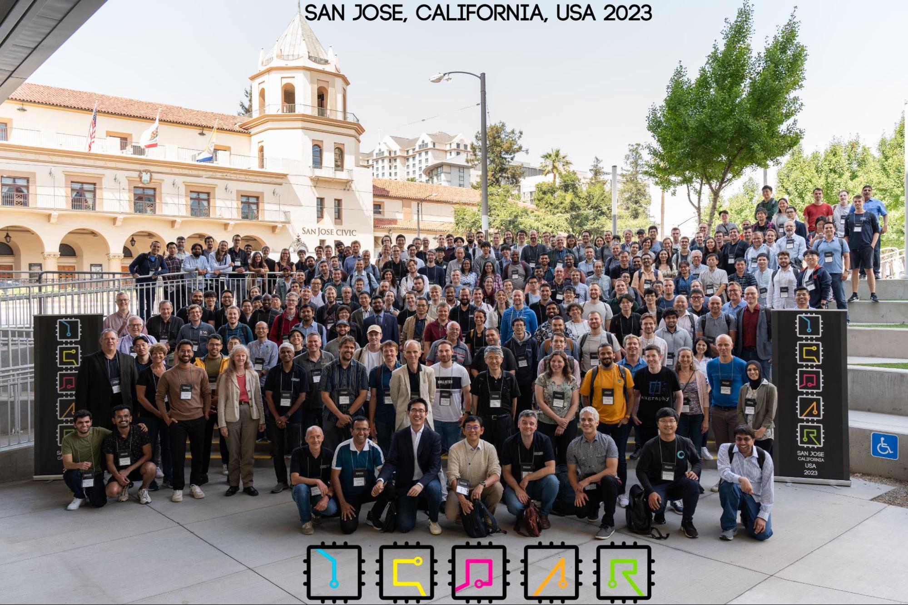
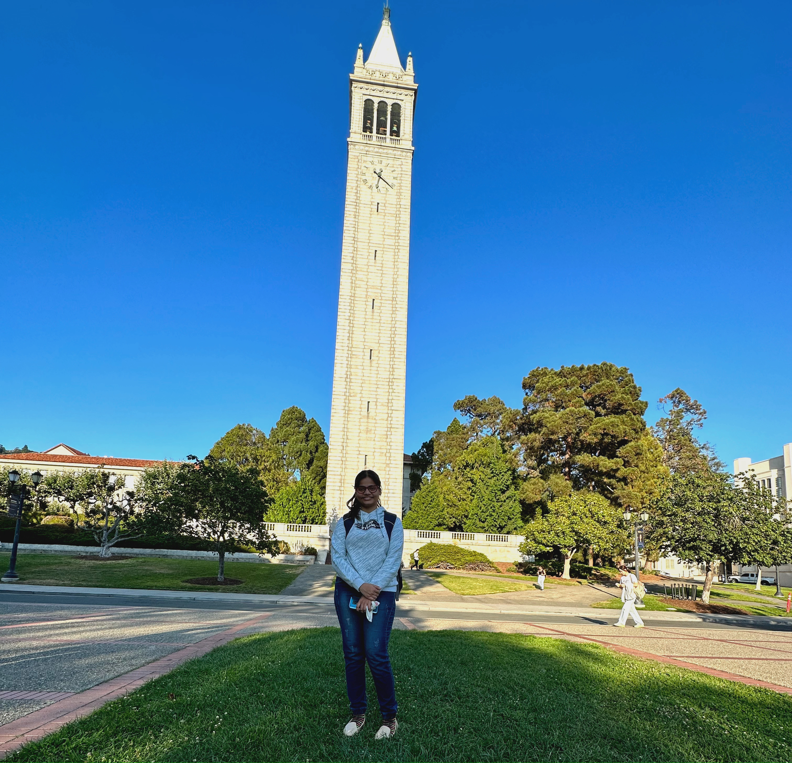
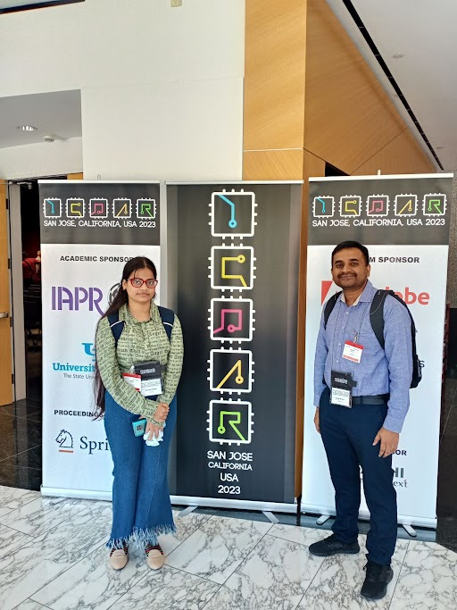

Shreya’s Experience at the ICDAR 2023 held in San José, California
Shreya Shukla, 1 October 2023
My First Conference : ICDAR 2023

I recently got the exhilarating opportunity to attend The 17th International Conference on Document Analysis and Recognition (ICDAR 2023), organized in San José, California, to present my research work titled “Towards Making Flowchart Images Machine interpretable”. I was incredibly excited to share my work and engage with fellow researchers and enthusiasts in the field of document recognition and reasoning. However, it also brought some nervousness as it was my first time at a conference of this magnitude among seasoned researchers.
Touching down in San Francisco at 4pm on August 11th, a few days ahead of the conference, I settled down at my abode in Sunnyvale, a safe and conveniently located city just a 20-minute drive from the conference venue in San José. Unlike the usual jet lag, my initial days were marred by illness due to the abrupt change in weather and cuisine. Unfortunately, this limited my sightseeing plans, causing me to miss out on visiting iconic locations such as Big Sur, Lake Tahoe and Yosemite National Park.
The day after my arrival, I met Nakul, a fellow lab-mate who was also in California at the time for his summer internship. As the conference drew nearer, my days were a mix of rest and short visits to nearby places, including downtown Sunnyvale, shopping centers in San Mateo, and Santana Row in San José. One standout memory from my U.S. stay was an impromptu trip to the picturesque Monterey beaches.

Fast forward to the 20th of August, I attended the welcome reception of the ICDAR conference. This event presented a remarkable opportunity to engage with revered figures in both industry and academia. Conversations with Brandon Smock and Rohith Pesala from Microsoft, as well as Dr. Manasi Patwardhan from the TCS Research team, offered profound insights about industrial research. Furthermore, enlightening discussions with professors like Dr. Sukalpa Chanda from the University of Ostfold and Dr. Josep Llados, Director of CVC UAB, provided a deeper understanding of their respective research endeavors and opened avenues to explore potential master's opportunities in Europe. The recognition and appreciation of my undergraduate work during these conversations was deeply gratifying.
The main conference took place at The Marriott, San Jose, spanning from 21st August to 23rd August. It featured a diverse array of captivating events like keynote speeches, oral and poster presentations and doctoral consortium. Following this, the conference extended to the Adobe Headquarters at San José from 24th to 26th of August, featuring workshops and tutorials. These sessions delved deep into a broad spectrum of topics under the umbrella of document understanding.
The first three days of the event kicked off with oral sessions, followed by keynote talks and poster presentations. Among other exciting works that I came across, “Decoupling Visual-Semantic Features Learning with Dual Masked Autoencoder for Self-Supervised Scene Text Recognition” by Qiao et al. caught my attention. This paper improves the performance on self-supervised scene text recognition by proposing two new masking techniques : intra-window and window random masking. The authors develop a siamese network architecture that aligns predictions from the two masking strategies, allowing visual and semantic features to benefit each other. They also introduce a dual distillation framework with two pre-trained teacher networks focusing on visual and semantic features, where the target network is trained to reconstruct the teachers' features. Another interesting work was “Diffusion-Based Document Layout Generation” by He et al. which applies discrete diffusion models for document layout generation, and proposes a new metric called Document Earth Mover's Distance (Doc-EMD) for evaluating similarity between document layouts, revolutionizing the evaluation standards in this domain.

My poster presentation was scheduled on the second day of the main conference, following the oral sessions and keynote talk. Sharing our research on flowchart-to-code conversion at the conference was an enriching experience. As I presented the intricacies and potential of our work, the audience showed keen interest, asking insightful questions and offering diverse perspectives. The positive reception from the community reaffirmed the importance of the problem we were addressing and underscored the relevance of our research. Moreover, the invaluable feedback we received on refining the flowchart image encoding methodology added a new layer of motivation.
On the following day, I eagerly continued my networking endeavors, after having interacted with several masters and Ph.D. students in the past days. One of the key highlights was a conversation with Dr. Rajiv Jain from Adobe, Maryland, during which he not only shared valuable insights into the research landscape at Adobe, but also connected me with scientists at Adobe India. Additionally, I had an intriguing discussion with Sanket Biswas, a dedicated Ph.D. student at CVC. Sanket graciously shared his experiences pursuing a Ph.D. outside his home country, shedding light on the level of dedication and perseverance required in such academic pursuits.
Later that day, some fellow presenters at the conference spontaneously planned a visit to UC Berkeley, and I eagerly joined them. The size of UC Berkeley's library left me awe-struck. Its vast expanse was a testament to the institution's commitment to knowledge and academic excellence. Engaging with students added a personal touch to my experience. Additionally, we explored the bustling food court and had the privilege of observing live classes in progress, offering a glimpse into the vibrant academic life at this prestigious university.


Accompanying us on this visit was Saleem Ahmed, a Ph.D. candidate from the University of Buffalo. Interacting with him proved to be an enlightening experience as our conversation delved into the depths of his research, experiences, and the invaluable lessons he had gathered along his academic journey. His insights provided a valuable roadmap for my own academic journey.

As my Californian sojourn came to a close on the 24th of August, I attended the ScalDoc’23 workshop, which was co-organized by my supervisor Dr. Anand Mishra in conjunction with ICDAR 2023. The workshop featured thought-provoking talks that delved into the future of document analysis, opening up new dimensions in my understanding of the field. The knowledge and inspiration I gathered from this culminating event were the perfect closing notes to my enriching ICDAR 2023 experience.

I extend my heartfelt gratitude to my advisor, Dr. Anand Mishra, for his unwavering guidance and support throughout my undergraduate research, and for giving me this invaluable opportunity to attend and present our research at ICDAR, a premier conference on document analysis. I appreciate my co-authors for their invaluable contributions to our research work. I am also thankful to the ACM-W scholarship program for generously supporting my travel to the conference venue. I am confident that the wealth of knowledge and experience gained at ICDAR 2023 will significantly benefit my future research endeavors.